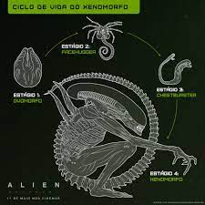

OS XENOMORPHOS, SUAS CARACTERÍSTICAS E SUAS CASTAS.
São seres de aparência similar a uma serpente, porém com pernas e braços (humanoides), cabeça alongada, e sua famosa segunda boca, uma espécie de submandíbula que mantêm dentro de suas bocas e que é de certa forma disparada para fora, porém continuando presa à boca do Alien, perfurando seus inimigos.
Os Aliens, embora dependam das ordens da rainha para saberem o que fazer, tem uma inteligência individual bem aguçada, sendo capazes de raciocinar, criar estratégias, escapar de armadilhas, e identificar hospedeiros de seus ovos. Se assimilam muito a formigas, agindo segundo as ordens mentais de sua Rainha.
A Rainha é dotada de inteligência e está conectada aos soldados por um elo mental. Sendo assim, tudo que um deles vê, os outros veem também.
Tem em seu sistema circulatório um ácido altamente perigoso, que é usado para atacar ou se defender de predadores.
Os Aliens, de forma geral, têm uma estatura superior à humana, são bípedes, e têm ótima resistência física e força, o que os torna uma grande ameaça, mas também detestam fogo e luz, os deixando vulneráveis a esses elementos.
Logo após saírem do útero da rainha, os xenomorfos permanecem em estado de hibernação dentro de ovos grandes e de aspecto gosmento.
A casca desses ovos é grossa e semelhante ao couro, e em seu topo há uma grande abertura no formato de um “X”, o que dá a eles um aspecto de botão de flor.
A presença de algum outro ser vivo no ninho “ativa” as crias adormecidas, e a abertura em “X” se abre, permitindo ao filhote sair.
;
O alien já fora do ovo. Sua aparência inicial é completamente diferente da de um adulto, sendo semelhante a um aracnídeo com uma longa cauda.
Essa pequena aranha pálida persegue qualquer ser vivo e salta em seu rosto, prendendo-se a ele e passando a controlar sua respiração e sinais vitais.
É durante esse período que o Facehugger deposita o embrião no corpo do hospedeiro. Uma vez que isso é feito, ele se solta do rosto da vítima e morre.
;
Dentro do hospedeiro, o embrião se desenvolve por um curto período de tempo. Uma vez completado seu desenvolvimento, ele salta para fora através do peito do ser vivo, matando-o como consequência.
A criatura que sai do corpo tem o aspecto de uma pequena cobra cega de pele pálida, que bisca imediatamente a proteção de um ambiente escuro, comendo tudo o que puder até começar a crescer e trocar de pele.
; 
A forma adulta final, um ser de pele negra e grossa, com aspecto de serpente e um crânio alongado e extremamente resistente.
Possui braços e pernas, ao contrário do estoura-peito, e sua cauda apresenta um afiado ferrão, sua grande arma de defesa.
Apesar de imenso, o adulto é capaz de se esgueirar por espaços apertados e surpreender até a mais atenta das vítimas.
Enquanto ainda é um embrião, o alien pode absorver características do ser vivo hospedeiro, tornando-se diferenciado e mais propício à realização de certas atividades. Os diferentes tipos de xenomorfos possuem comportamentos diferentes e exercem funções variadas dentro do ninho. A mais comum das formas adultas é o Zangão
SUAS CASTAS E VARIAÇÕES
WARRIOR
O Guerreiro é uma forma evoluída e mais poderosa do que o Zangão, geralmente responsável pela proteção da rainha e do ninho.
Como qualquer xenomorfo, é um hábil caçador mesmo quando sozinho, embora prefira atuar em bando
Alguns guerreiros evoluem para Guardas Reais, sendo totalmente responsáveis pela proteção da rainha e capazes de controlar seus parentes menores.
Como os Zangões, os Guerreiros também são originários de presas humanas, mas acredita-se que estes derivem de um tipo de Facehugger maior e mais forte.
RUNNER
Menores que seus primos, quando um Facehugger normal se prendeu ao rosto de um cachorro.
Anda sobre quatro patas e, como um Zangão, atua na caça de presas para alimentação e para o ninho.
Menor e mais fraco, mas muito mais ágil e rápido, o Corredor é extremamente adaptado para perseguição e é capaz de se locomover com facilidade, mesmo por locais estreitos.
QUEEN ALIEN
O último e mais poderoso tipo de xenomorfo é a Rainha, gigantesca muito mais pesada que qualquer um de seus filhos, ainda é uma predadora eficiente, capaz de usar sua força para sobrepor enormes obstáculos e com uma incrível resistência que a faz muito difícil de ser morta.
Em geral, passa sua vida inteira no centro do ninho, botando ovos que saem de uma grande bolsa, seu útero. Quando sua prole é ameaçada, porém, é capaz de se desconectar desse útero e perseguir seu agressor com um ímpeto que a faz um dos aliens mais perigosos já vistos.
PREDALIEN
acesse para acessar parte do univérso dele.
Outra forma de híbrido dessa espécie é o Predalien, cujo embrião se desenvolve dentro de um hospedeiro da espécie Yautja, popularmente chamada de Predadores.
O Predalien é extremamente inteligente e forte, apresentando todos os aspectos do Xenomorfo e a cabeça e força de um Yautja. Possuindo também aspectos de uma Rainha e de Facehugger, é capaz de colocar Estoura-peitos diretamente dentro do hospedeiro, sem a necessidade de ovos.
Também é capaz de colocar mais de um embrião dentro do mesmo hospedeiro.
DEEACON
Todas as evoluções do Xenomorfo derivam de um ancestral comum, o Protoxenomorfo, uma espécie primitiva, que deriva de um embrião desenvolvido em uma espécie alienígena conhecida como Engenheiros, menor e mais ágil, o Protoxenomorfo/deeacon não possui a dupla mandíbula de seus primos, mas um único par de mandíbulas que podem se projetar para fora.
Sua cabeça não é alongada, mas possui o aspecto de uma barbatana de tubarão.
MEMMMMMMMMES
;
; ;
; ;
; ;
;